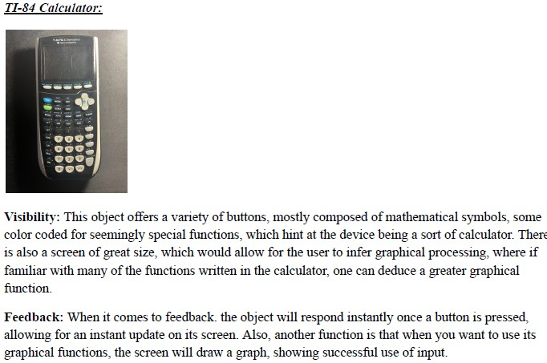

What
We need to understand the theory and principles of these ideas, where responsive design, clear practices are to be expected. When looking at semantic HTML practices, we have to understand many elements such as header, main, section, article, and footer, which ensure structural understanding if properly labeled, headed and described. These will provide meaningful navigation of a page. We also have to focus on multiple layout design strategies that could allow content to adapt to different devices, such as Grid and Flexbox. We cannot ensure accessibility if we forget to adapt smaller screens in our current day. With all these principles, we have to ensure that everyone's digital experiences are inclusive, accessible and usable.
What Continued
Accessibility evaluation tools, identify barriers like contrast, labels, or inaccessible tables and forms, helping designers make improvements. Also, we cannot talk about these ideas without talking about Norman's design principle: visibility, feedback, constraints, and affordances. We need clear visual cues and consistent layouts to allow users to understand the screen more effectively. Accessibility evaluation tools, such as WAVE or Axe, identify barriers like low contrast, missing labels, or inaccessible tables and forms, helping designers make evidence-based improvements
EXAMPLE
The following is an example of how normans principles work.
